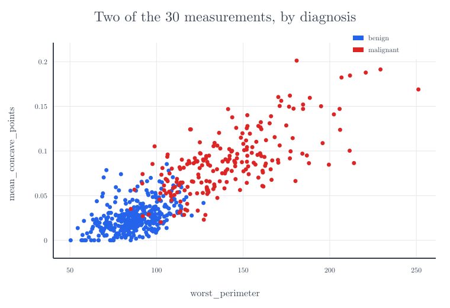
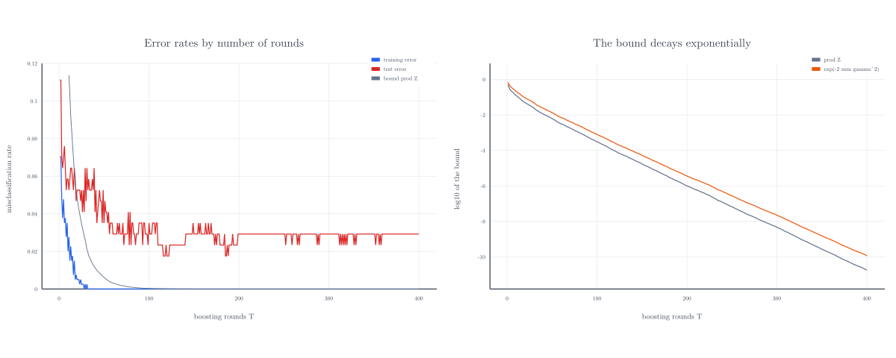
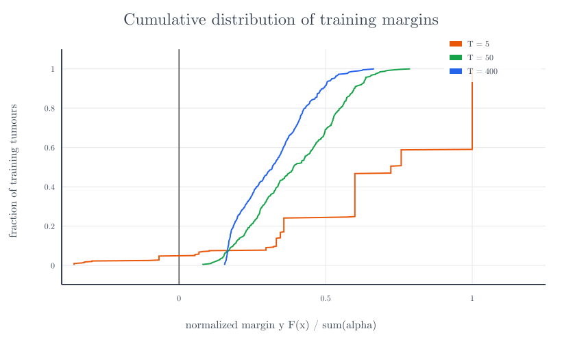
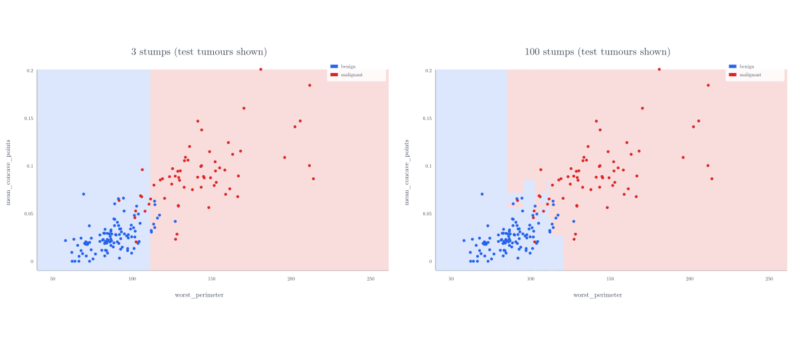

AdaBoost on the Wisconsin Breast-Cancer Data
Abstract
AdaBoost (Freund and Schapire, 1997) builds a strong classifier as a weighted vote of decision stumps, one-split trees that are individually weak. We derive the algorithm as greedy minimization of the exponential loss. From that derivation follow the vote weights, the reweighting rule, the training-error bound \(\prod_t 2\sqrt{\varepsilon_t(1-\varepsilon_t)}\), and the fact that each stump is useless under the next round's weights. All four are checked numerically. On the 569 tumours of the Wisconsin diagnostic data, boosting takes the test error from 11% for one stump to 2.9%. The test error keeps falling after the training error reaches zero, while the smallest margin keeps growing, as margin theory predicts.
The data
dm::datasets::breast_cancer() is the Wisconsin diagnostic breast-cancer data
(Street, Wolberg and Mangasarian, 1993). Each of 569 tumours is described by 30
measurements of the cell nuclei in a digitized image of a fine-needle aspirate:
radius, texture, perimeter, area, smoothness, compactness, concavity, concave
points, symmetry and fractal dimension. Each appears as its mean, its standard
error and its "worst" (mean of the three largest) value. The response is
diagnosis, either benign or malignant.
#include <dm/dm.hpp>
namespace agg = dm::agg;
int main() {
const auto cancer = dm::datasets::breast_cancer();
std::print("{} tumours, {} columns.\n\n", cancer.nrows(), cancer.ncols());
std::print("{}\n",
cancer | dm::group_by("diagnosis") |
dm::summarise(agg::n("Tumours"),
agg::mean("mean_radius", "Mean radius"),
agg::mean("worst_perimeter", "Worst perimeter"),
agg::mean("mean_concave_points",
"Mean concave points"),
agg::mean("worst_texture", "Worst texture")) |
dm::to_md(3));
}569 tumours, 31 columns.
| diagnosis | Tumours | Mean radius | Worst perimeter | Mean concave points | Worst texture |
|---|---|---|---|---|---|
| malignant | 212 | 17.463 | 141.370 | 0.088 | 29.318 |
| benign | 357 | 12.147 | 87.006 | 0.026 | 23.515 |
Malignant nuclei are larger and more irregular. The two classes are well separated in the size and concavity measurements, though not perfectly.
#include <dm/dm.hpp>
int main() {
std::filesystem::create_directories("build");
const auto cancer = dm::datasets::breast_cancer();
auto plot = dm::graphics::RPlot::create();
for (const auto & [label, color] : {
std::pair{"benign", dm::RGB{37, 99, 235}}, {"malignant",
dm::RGB{220, 38, 38}}
}) {
const auto rows = cancer | dm::filter_rows([&](const auto &r) {
return r.get_string("diagnosis") == label;
});
plot.points(rows.get_column<double>("worst_perimeter").values(),
rows.get_column<double>("mean_concave_points").values(),
label, color, 3.5);
}
plot.title("Two of the 30 measurements, by diagnosis").x_label(
"worst_perimeter").y_label("mean_concave_points").size(760, 520).save_svg("build/adaboost_scatter.svg");
}
We hold out 30% of the tumours for testing. stats::train_test_split()
stratifies by diagnosis, so both parts keep the class proportions.
#include <dm/dm.hpp>
int main() {
const auto[train, test] =
dm::stats::train_test_split(dm::datasets::breast_cancer(), 0.3, 1,
"diagnosis");
std::print("{}\n\n{}\n",
train | dm::group_by("diagnosis") | dm::count("Training") |
dm::to_md(),
test | dm::group_by("diagnosis") | dm::count("Test") |
dm::to_md());
}| diagnosis | Training |
|---|---|
| malignant | 148 |
| benign | 250 |
| diagnosis | Test |
|---|---|
| malignant | 64 |
| benign | 107 |
AdaBoost as greedy minimization of exponential loss
Code the classes as \(y\in\{-1,+1\}\), with malignant as \(+1\). A decision
stump \(h(x)=s\cdot\operatorname{sign}(c - x_j)\) predicts from a single
feature \(x_j\), a threshold \(c\) and a polarity \(s=\pm 1\). AdaBoost builds
an additive model
one term at a time. We derive each term from the exponential loss \(L(F)=\frac1n\sum_i e^{-y_iF(x_i)}\) (Friedman, Hastie and Tibshirani, 2000).
The vote weight
Suppose \(F_{t-1}\) is fixed and we add \(\alpha h\). Define the example weights \(D_t(i)\propto e^{-y_iF_{t-1}(x_i)}\), normalized to sum to 1. Since \(y_ih(x_i)=+1\) when \(h\) is right and \(-1\) when it is wrong,
where \(\varepsilon=\sum_i D_t(i)[h(x_i)\ne y_i]\) is the weighted error of \(h\). For any \(\alpha>0\), \(Z\) increases with \(\varepsilon\), so the best \(h\) is the stump with the smallest weighted error. Setting \(\partial Z/\partial\alpha = -(1-\varepsilon)e^{-\alpha}+\varepsilon e^{\alpha}=0\) gives
The new weights are \(D_{t+1}(i)=D_t(i)\,e^{-\alpha_ty_ih_t(x_i)}/Z_t\): the weights of misclassified examples grow by \(e^{\alpha_t}\) and those of the rest shrink by \(e^{-\alpha_t}\).
The training-error bound
Unrolling the recursion from \(D_1(i)=1/n\) gives
A misclassified example has \(y_iF_T(x_i)\le 0\), so \([H(x_i)\ne y_i]\le e^{-y_iF_T(x_i)}\). Summing, and using \(\sum_iD_{T+1}(i)=1\),
Write \(\varepsilon_t=\tfrac12-\gamma_t\), where \(\gamma_t\) is the stump's edge over chance. Then \(Z_t=\sqrt{1-4\gamma_t^2}\le e^{-2\gamma_t^2}\), since \(1-u\le e^{-u}\), and so
Any fixed edge \(\gamma_t\ge\gamma>0\) drives the training error to zero exponentially fast. The bound is crossed by the 0/1 error only when the error reaches its floor of 0, which takes \(T > \ln n/(2\gamma^2)\) rounds.
Each stump is useless to the next round
Under the new weights, the stump just chosen has error exactly \(\tfrac12\):
So the next round never picks \(h_t\) again. AdaBoost reweights until the last weak learner carries no information, and then looks for a new one.
Fitting the model
stats::AdaBoostClassifier takes a data frame and a formula. Here
diagnosis ~ . uses all 30 measurements. history() has one row per round: the
stump's feature, threshold and polarity, its weighted error \(\varepsilon_t\),
vote \(\alpha_t\), \(Z_t\), the running bound \(\prod_s Z_s\) and the training
error.
#include <dm/dm.hpp>
int main() {
const auto[train, test] =
dm::stats::train_test_split(dm::datasets::breast_cancer(), 0.3, 1,
"diagnosis");
const dm::stats::AdaBoostClassifier model(train, "diagnosis ~ .",
{.n_rounds = 400});
std::print("{} stumps, positive class '{}'.\n\n{}\n", model.n_rounds(),
model.positive_class(), model.history().head(8).to_md(3));
}400 stumps, positive class 'malignant'.
| round | feature | threshold | polarity | weak_error | alpha | Z | bound | train_error |
|---|---|---|---|---|---|---|---|---|
| 1 | worst_perimeter | 111.600 | -1 | 0.070 | 1.291 | 0.511 | 0.511 | 0.070 |
| 2 | mean_concave_points | 0.045 | -1 | 0.157 | 0.840 | 0.728 | 0.372 | 0.070 |
| 3 | worst_texture | 23.350 | -1 | 0.171 | 0.789 | 0.753 | 0.280 | 0.048 |
| 4 | worst_concave_points | 0.151 | -1 | 0.251 | 0.547 | 0.867 | 0.243 | 0.038 |
| 5 | mean_concave_points | 0.027 | -1 | 0.278 | 0.478 | 0.896 | 0.218 | 0.048 |
| 6 | area_error | 35.185 | -1 | 0.259 | 0.525 | 0.877 | 0.191 | 0.035 |
| 7 | worst_smoothness | 0.138 | -1 | 0.291 | 0.445 | 0.909 | 0.173 | 0.038 |
| 8 | mean_texture | 20.235 | -1 | 0.280 | 0.472 | 0.898 | 0.156 | 0.028 |
The first stump, worst_perimeter \(\le 111.6\), already classifies 93% of the
training tumours. Later stumps are weaker, with \(\varepsilon_t\) near 0.3, and
they get smaller votes. Round 2 picks a different stump, as the identity above
requires. The 0/1 training error is not monotone, because it is the exponential
loss, not the error, that each round decreases.
The next block checks the three derived facts on the fitted model, using only its public outputs. The weights \(D_{t+1}\) are recomputed from the decision function \(F_t\), and the stump \(h_t\) is recovered as \(\operatorname{sign}(F_t-F_{t-1})\).
#include <dm/dm.hpp>
int main() {
const auto[train, test] =
dm::stats::train_test_split(dm::datasets::breast_cancer(), 0.3, 1,
"diagnosis");
const dm::stats::AdaBoostClassifier model(train, "diagnosis ~ .",
{.n_rounds = 400});
const auto history = model.history();
const auto &label = train.get_column<std::string>("diagnosis").values();
std::vector<double> y;
for (const auto &l : label)
y.push_back(l == model.positive_class() ? 1.0 : -1.0);
double worst_gap = -1.0;
for (std::size_t t = 0; t < history.nrows(); ++t)
worst_gap =
std::max(worst_gap,
history.double_at("train_error", t) - history.double_at(
"bound", t));
std::print("max over rounds of (training error - prod Z): {:.3g} (must be <= 0)\n",
worst_gap);
double edges = 0.0;
for (double e : history.get_column<double>("weak_error").values())
edges += (0.5 - e) * (0.5 - e);
std::print("prod Z = {:.3g} <= exp(-2 sum gamma^2) = {:.3g}\n",
history.double_at("bound", history.nrows() - 1),
std::exp(-2.0 * edges));
// Error of h_t under D_{t+1} (D_{t+1} ~ exp(-y F_t)) for the first rounds: always 1/2.
for (std::size_t t = 1; t <= 5; ++t) {
// decision_function(data, 0) means "all rounds", so F_0 = 0 is written out.
const auto before =
t == 1 ? std::vector<double>(y.size(), 0.0)
: model.decision_function(train, t - 1);
const auto after = model.decision_function(train, t);
double wrong = 0.0, total = 0.0;
for (std::size_t i = 0; i < y.size(); ++i) {
const double w = std::exp(-y[i] * after[i]);
const double h = after[i] > before[i] ? 1.0 : -1.0;
total += w;
if (h != y[i]) wrong += w;
}
std::print("round {}: weighted error of h_{} under D_{} = {:.12f}\n", t,
t, t + 1, wrong / total);
}
}max over rounds of (training error - prod Z): -1.79e-11 (must be <= 0) prod Z = 1.79e-11 <= exp(-2 sum gamma^2) = 1.16e-10 round 1: weighted error of h_1 under D_2 = 0.500000000000 round 2: weighted error of h_2 under D_3 = 0.500000000000 round 3: weighted error of h_3 under D_4 = 0.500000000000 round 4: weighted error of h_4 under D_5 = 0.500000000000 round 5: weighted error of h_5 under D_6 = 0.500000000000
Training error, test error and the bound
staged_error() evaluates the ensemble after every round. The left panel shows
the training error, the test error and the bound \(\prod_tZ_t\) once it falls
below 0.12. The right panel shows the exponential decay of the bound on a log
scale, together with the cruder bound \(\exp(-2\sum\gamma_t^2)\).
#include <dm/dm.hpp>
int main() {
std::filesystem::create_directories("build");
const auto[train, test] =
dm::stats::train_test_split(dm::datasets::breast_cancer(), 0.3, 1,
"diagnosis");
const dm::stats::AdaBoostClassifier model(train, "diagnosis ~ .",
{.n_rounds = 400});
const auto history = model.history();
const auto rounds = history.get_column<double>("round").values();
const auto test_error = model.staged_error(test);
std::vector<double> bound_x, bound_y, log_bound, log_gamma;
double edges = 0.0;
for (std::size_t t = 0; t < rounds.size(); ++t) {
const double b =
history.double_at("bound", t), e =
history.double_at("weak_error", t);
edges += (0.5 - e) * (0.5 - e);
if (b < 0.12) bound_x.push_back(rounds[t]), bound_y.push_back(b);
log_bound.push_back(std::log10(b));
log_gamma.push_back(-2.0 * edges / std::log(10.0));
}
auto errors = dm::graphics::RPlot::create();
errors.lines(rounds, history.get_column<double>("train_error").values(),
"training error", dm::RGB{37, 99, 235}, 2.0).lines(
rounds, test_error, "test error", dm::RGB{220, 38, 38}, 2.0).lines(
bound_x, bound_y, "bound prod Z", dm::RGB{100, 116, 139}, 1.5).title(
"Error rates by number of rounds").x_label("boosting rounds T").y_label(
"misclassification rate").y_limits(0, 0.12);
auto bounds = dm::graphics::RPlot::create();
bounds.lines(rounds, log_bound, "prod Z", dm::RGB{100, 116, 139}, 2.0).lines(rounds, log_gamma, "exp(-2 sum gamma^2)", dm::RGB{234, 88, 12}, 2.0).title("The bound decays exponentially").x_label("boosting rounds T").y_label("log10 of the bound");
dm::graphics::RLayout::create(1, 2).add(errors).add(bounds).size(1200, 480).save_svg("build/adaboost_errors.svg");
for (int t : {1, 10, 50, 100, 200, 400})
std::print("T = {:3}: training error {:.4f}, test error {:.4f}, bound {:.3g}\n",
t, history.double_at("train_error", t - 1),
test_error[t - 1], history.double_at("bound", t - 1));
}T = 1: training error 0.0704, test error 0.1111, bound 0.511 T = 10: training error 0.0201, test error 0.0585, bound 0.121 T = 50: training error 0.0000, test error 0.0351, bound 0.00615 T = 100: training error 0.0000, test error 0.0351, bound 0.000308 T = 200: training error 0.0000, test error 0.0292, bound 1.01e-06 T = 400: training error 0.0000, test error 0.0292, bound 1.79e-11

The bound holds at every round and decays at a steady exponential rate: the right panel is almost a straight line. The striking part is the test error. It keeps decreasing from 3.5% at 50 rounds, where the training error is already zero, to 2.9% at 200 rounds. Adding more stumps does not overfit here, which the training error alone cannot explain.
Margins
Schapire, Freund, Bartlett and Lee (1998) explain this through the normalized margin
positive exactly when example \(i\) is classified correctly, and large when the
vote is confident. Their bound on the test error decreases in the fraction of
training examples with small margin, and it does not grow with \(T\). After the
training error reaches zero, AdaBoost keeps pushing up the smallest margins,
because the exponential loss still rewards it. margins() returns \(m_i\) for
each training row.
#include <dm/dm.hpp>
int main() {
std::filesystem::create_directories("build");
const auto[train, test] =
dm::stats::train_test_split(dm::datasets::breast_cancer(), 0.3, 1,
"diagnosis");
const dm::stats::AdaBoostClassifier model(train, "diagnosis ~ .",
{.n_rounds = 400});
auto plot = dm::graphics::RPlot::create();
const std::vector<std::pair<std::size_t, dm::RGB>> stages{
{5, {234, 88, 12}}, {50, {22, 163, 74}}, {400, {37, 99, 235}}
};
for (const auto & [T, color] : stages) {
auto m = model.margins(train, T);
std::ranges::sort(m);
std::vector<double> share(m.size());
for (std::size_t i = 0; i < m.size(); ++i)
share[i] = (i + 1.0) / m.size();
plot.lines(m, share, std::format("T = {}", T), color, 2.0);
std::print("T = {:3}: smallest margin {:+.3f}, 5% quantile {:+.3f}, median {:+.3f}\n",
T, m.front(), m[m.size() / 20], m[m.size() / 2]);
}
plot.abline_v(0.0).x_limits(-0.4, 1.25).title("Cumulative distribution of training margins").x_label("normalized margin y F(x) / sum(alpha)").y_label("fraction of training tumours").size(820, 500).save_svg("build/adaboost_margins.svg");
}T = 5: smallest margin -0.358, 5% quantile +0.054, median +0.722 T = 50: smallest margin +0.081, 5% quantile +0.154, median +0.391 T = 400: smallest margin +0.155, 5% quantile +0.163, median +0.319

From 50 to 400 rounds, the smallest margin roughly doubles. The median margin falls, because AdaBoost gives up confidence on easy examples to gain it on the hard ones. The curve moves away from zero at the bottom, which is the part the margin bound depends on.
Comparison and feature importance
A single stump has a test error of 11%. A linear discriminant analysis on all 30 features, which models the classes as Gaussians with a common covariance, is a strong baseline for this data.
#include <dm/dm.hpp>
int main() {
const auto[train, test] =
dm::stats::train_test_split(dm::datasets::breast_cancer(), 0.3, 1,
"diagnosis");
const dm::stats::AdaBoostClassifier model(train, "diagnosis ~ .",
{.n_rounds = 400});
const dm::stats::LDA lda(train, "diagnosis ~ .");
const auto predicted = lda.predict(test);
const auto &truth = test.get_column<std::string>("diagnosis").values();
double lda_wrong = 0.0;
for (std::size_t i = 0; i < truth.size(); ++i)
lda_wrong += predicted[i] != truth[i];
std::print("| Model | Training error | Test error |\n| :--- | ---: | ---: |\n");
for (std::size_t T : {1, 10, 50, 400})
std::print("| AdaBoost, {} stump{} | {:.3f} | {:.3f} |\n", T,
T == 1 ? "" : "s", model.error(train, T),
model.error(test, T));
std::print("| LDA, 30 features | {:.3f} | {:.3f} |\n\n",
1.0 - lda.training_accuracy(), lda_wrong / truth.size());
std::print("{}\n", model.feature_importance().head(8) | dm::to_md(3));
}| Model | Training error | Test error |
|---|---|---|
| AdaBoost, 1 stump | 0.070 | 0.111 |
| AdaBoost, 10 stumps | 0.020 | 0.058 |
| AdaBoost, 50 stumps | 0.000 | 0.035 |
| AdaBoost, 400 stumps | 0.000 | 0.029 |
| LDA, 30 features | 0.033 | 0.029 |
| feature | importance |
|---|---|
| mean_concave_points | 0.084 |
| mean_compactness | 0.083 |
| worst_texture | 0.078 |
| area_error | 0.074 |
| worst_smoothness | 0.053 |
| fractal_dimension_error | 0.051 |
| mean_smoothness | 0.051 |
| compactness_error | 0.049 |
Boosting reaches LDA's test error of 2.9% (5 of 171 test tumours). The perimeter stump of round 1 has the largest single vote, but over 400 rounds the votes spread over many features. Concavity, compactness, texture and smoothness measurements carry the most total weight.
What the boundary looks like
With two features the decision regions can be drawn exactly. Every stump cuts
along an axis, so \(F_T\) is constant on the cells of the grid formed by the
thresholds. plot_decision_regions() shades each cell by its predicted class.
The boundary is a staircase, and with enough stumps it can bend around the data
as needed.
#include <dm/dm.hpp>
int main() {
std::filesystem::create_directories("build");
const auto[train, test] =
dm::stats::train_test_split(dm::datasets::breast_cancer(), 0.3, 1,
"diagnosis");
auto layout = dm::graphics::RLayout::create(1, 2);
for (std::size_t T : {3, 100}) {
const dm::stats::AdaBoostClassifier model(train,
"diagnosis ~ worst_perimeter + mean_concave_points",
{.n_rounds = T});
std::print("T = {:3}: training error {:.3f}, test error {:.3f}\n", T,
model.error(train), model.error(test));
layout.add(model.plot_decision_regions(test).title(
std::format("{} stumps (test tumours shown)", T)));
}
layout.size(1200, 520).save_svg("build/adaboost_regions.svg");
}T = 3: training error 0.070, test error 0.111 T = 100: training error 0.040, test error 0.111

On these two features alone, 100 stumps fit the training data better than 3 (4.0% against 7.0% training error) but leave the test error at 11.1%. The extra steps of the staircase chase single training points. With all 30 features the margins matter more than the shape of any one boundary.
Summary
- AdaBoost is forward-stagewise minimization of the exponential loss. The vote \(\alpha_t=\frac12\ln\frac{1-\varepsilon_t}{\varepsilon_t}\), the reweighting rule, the bound \(\prod_t 2\sqrt{\varepsilon_t(1-\varepsilon_t)}\le e^{-2\sum\gamma_t^2}\) and the identity "\(h_t\) has error \(\frac12\) under \(D_{t+1}\)" all follow, and all hold on the fitted model to machine precision.
- On the Wisconsin data, 400 stumps take the test error from 11.1% for a single stump to 2.9%, level with LDA.
- The test error keeps improving after the training error reaches zero, while the smallest training margin keeps increasing.
References
- Y. Freund, R. E. Schapire (1997). A decision-theoretic generalization of on-line learning and an application to boosting. Journal of Computer and System Sciences 55(1), 119--139.
- J. Friedman, T. Hastie, R. Tibshirani (2000). Additive logistic regression: a statistical view of boosting. Annals of Statistics 28(2), 337--407.
- R. E. Schapire, Y. Freund, P. Bartlett, W. S. Lee (1998). Boosting the margin: a new explanation for the effectiveness of voting methods. Annals of Statistics 26(5), 1651--1686.
- W. N. Street, W. H. Wolberg, O. L. Mangasarian (1993). Nuclear feature extraction for breast tumor diagnosis. Proc. SPIE 1905, 861--870.